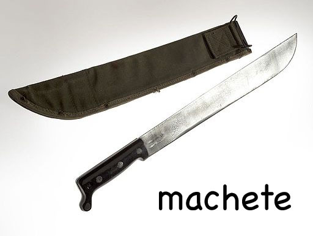

A Tiny Seed
In a village on the slopes of Mount Kenya, a little girl worked in the fields with her mother. She worried as she saw the big forests disappearing, but she knew the power of a tiny seed.
In a village on the slopes of Mount Kenya in East Africa, a little girl worked in the fields with her mother. Her name was Wangari.
Wangari loved being outside. In her family’s food garden she broke up the soil with her machete. She pressed tiny seeds into the warm earth.
Her favourite time of day was just after sunset. When it got too dark to see the plants, Wangari knew it was time to go home.
She would follow the narrow paths through the fields, crossing rivers as she went.
Wangari was a clever child and couldn’t wait to go to school. But her mother and father wanted her to stay and help them at home.
When she was seven years old, her big brother persuaded her parents to let her go to school.
She liked to learn!
Wangari learnt more and more with every book she read.
She did so well at school that she was invited to study in the United States of America.
Wangari was excited! She wanted to know more about the world.
At the American university Wangari learnt many new things. She studied plants and how they grow. And she remembered how she grew: playing games with her brothers in the shade of the trees in the beautiful Kenyan forests.
The more she learnt, the more she realised that she loved the people of Kenya. She wanted them to be happy and free.
The more she learnt, the more she remembered her African home.
When she had finished her studies, she returned to Kenya. But her country had changed. Huge farms stretched across the land.
Women had no wood to make cooking fires. The people were poor and the children were hungry.
Wangari knew what to do. She taught the women how to plant trees from seeds.
The women sold the trees and used the money to look after their families.
The women were very happy. Wangari had helped them to feel powerful and strong.
As time passed, the new trees grew into forests, and the rivers started flowing again. Wangari’s message spread across Africa.
Today, millions of trees have grown from Wangari’s seeds.
Wangari had worked hard. People all over the world took notice, and gave her a famous prize. It is called the Nobel Peace Prize, and she was the first African woman ever to receive it.
Wangari died in 2011, but we can think of her every time we see a beautiful tree.
[Reading Level 6.0]
- slopes: sides of a hill or mountain
- machete: a knife with a wide heavy blade
- clever: having a bright, sharp, and quick mind__
- persuaded: to have somebody do something by giving them good reasons for doing it
- stretched: to spread over an area of land

Photo Credit: By CIA photo [Public domain], via Wikimedia Commons
{kind=link}
Ref: Google Dictionary, Oxford Learners Dictionaries, kids.wordsmyth.com, MacMillan Dictionary, Word Hippo
- slopes: налуу, уул толгодын талууд
- machete: өргөн хүнд иртэй хутга
- clever: ухаантай - хурц, хурц, хурдан
- persuaded: ятгав - ямар нэгэн зүйлийг хийхэд нь тэдэнд сайн шалтгаан өгөхийг хүссэн зүйлээ хийх хэрэгтэй
- stretched: сунгасан - газрын гадаргуу дээгүүр тархах
Source: Translate.Google.com
- slopes: склоны - стороны холма или горы
- machete: мачете - нож с широким тяжелым лезвием
- clever: умный - с ярким, острым и быстрым разумом
- persuaded: убедить - заставить кого-то что-то сделать, предоставив им веские причины для этого
- stretched: растянутый - для распространения по участку земли
Source: Translate.Google.com
- slopes: беткейлер - таудың немесе таудың жағы
- machete: Машае - кең пышақпен пышақ
- clever: ақылды - жарқын, өткір және жылдам ақылға ие
- persuaded: сендіруге тырысады - біреу бір нәрсе істеу үшін, мұны жақсы себептері бар
- stretched: созылған - жер учаскесін кеңейту
Source: Translate.Google.com
- slopes: ลาด - ด้านข้างของเนินเขาหรือภูเขา
- machete: มีด - มีดที่มีใบมีดกว้าง
- clever: ฉลาด - มีความคิดที่สดใสคมชัดและรวดเร็ว
- persuaded: ชักชวน - มีคนทำอะไรบางอย่างโดยให้เหตุผลที่ดีในการทำเช่นนั้น
- stretched: ยืด - กระจายไปทั่วพื้นที่
Source: Translate.Google.com
- slopes: pendientes - lados de una colina o montaña
- machete: machete - un cuchillo con una cuchilla ancha y pesada
- clever: inteligente, tener una mente brillante, nítida y rápida
- persuaded: persuadido: hacer que alguien haga algo al darles buenas razones para hacerlo
- stretched: estirado - para extenderse sobre un área de tierra
Source: Translate.Google.com